I haven't been able to make it to Sakuracon since 2016 with my last con being AX 2017. A lot of things in the world have changed since then!!! I basically spent the entire con with my friend Flan. We had a really fun time! I took most of these photos, but some were taken by Flan, Makoto, and Ryan!
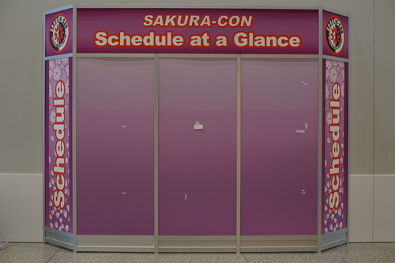 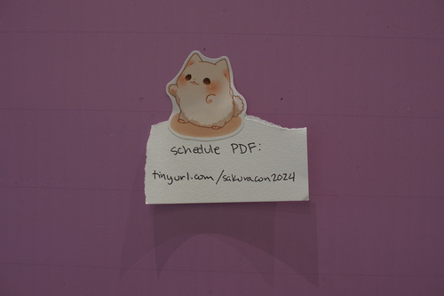Sakuracon is no longer at the Washington State Convention Center because it has been renamed Seattle Convention Center! There's a new gigantic building 2 blocks away where a lot of the con was happening.
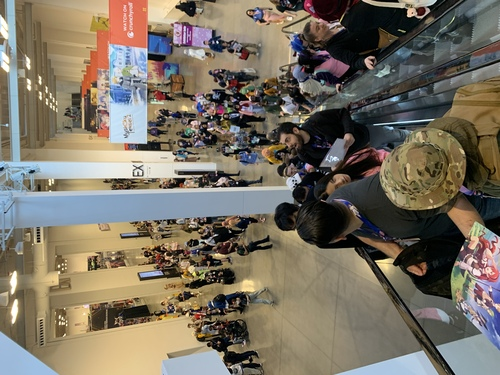I luckily managed to only forget an eraser and makeup remover. I have now put makeup remover in my makeup bag because the times I need it are only the times when I cosplay. Sorry, I am a nerd irl. Please lower your expectations!
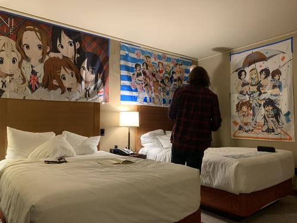 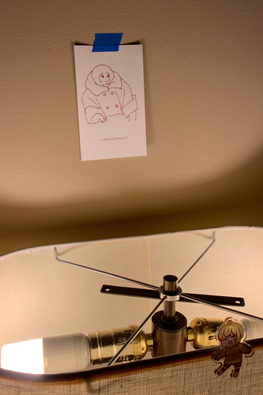You BET I spent the entire con admiring Chihuly! Seattle really loves him so they are scattered all around the area around the convention center.
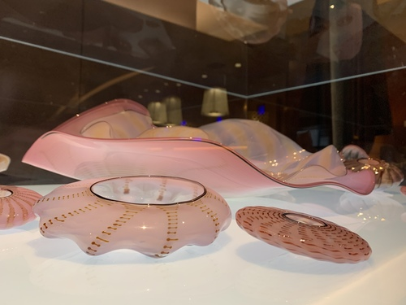For the first time in my life, I saw Persona 3 cosplays in person. The con was also filled with FF7 characters. I didn't recognize most of the cosplays so it felt like the times I've gone to ECCC. I just assume it was all Genshin Impact... Where are all the touhous?!
Three people were wearing this AliExpress Reimu cosplay! It was a pretty nice one tbh
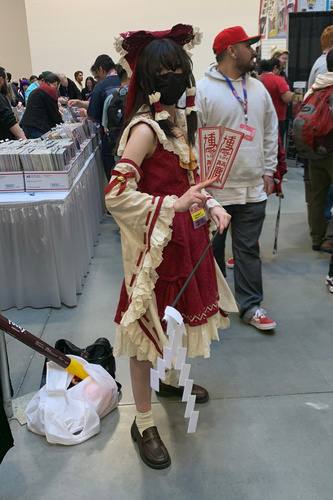Flan and I found CoD cosplayers!! We're big CoD fans! Here is "Soap"!
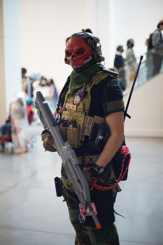I snuck some shots of a Sephiroth posing for someone else! I am so sneaky.
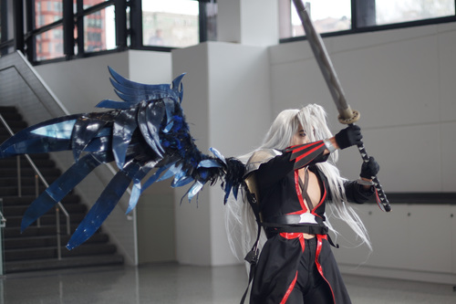 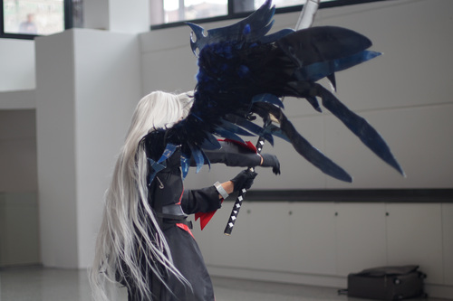My friend who usually does shoots with me wasn't able to attend on Saturday so there aren't any photos of my cosplays other than on phones from my friends. I didn't even stand by the area where the photographers hang out so no photos from them either!
On Friday, I wore my $8 at Goodwill Bodyline coord. I spent a few minutes trying to figure out how to tie my waist ties before giving up and asking the boys for help. They could not help me, so I cried to Kohi, but she didn't look at her phone!! She found me in the dealer's hall and helped me ;u; I didn't recognize her at all because she had a motorcycle helmet on!
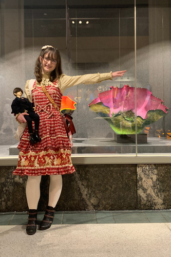I wasn't very smart and only brought heels to the con. I ended up switching to my most comfortable ones (barely) by the end of the night.
For Touhou Saturday, Flan cosplayed Marisa, Tae cosplayed Reimu, Rec cosplayed Yoshika, and I cosplayed PC98 Alice and switched to Suwako later. I was really surprised that a few people recognized me! A man couldn't believe he was seeing PC98 Alice in 2024. I ended up carrying around Cheby's 1.6kg butt as my prop for longer than I wanted and a woman was so happy to see Alice with a BJD! It was very fun even if my feet hurt!
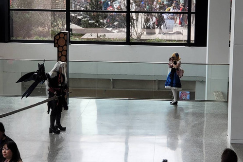 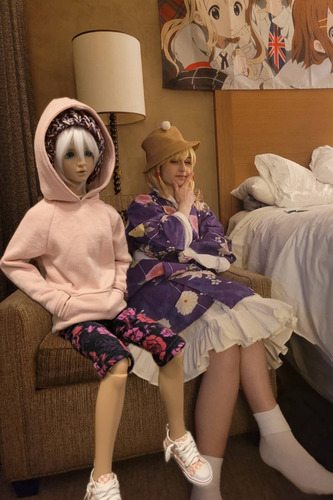For Sunday, I chose to wear Yui Hirasawa. It's a pretty comfy one to wear! I was not recognized as often as I was in PC98 Alice, which really surprised me. At one point, a girl ran up to me excitedly telling me about her last bookmark. I had no idea what in to heck she was talking about! She asked me if I was cosplaying Nobara. Who the h*nk is Nobara?! As I was being removed from the dealer's hall at the end of the con, I noticed two gross stains on my neck ribbon! DID NO ONE TELL ME???
I forgot it was Easter and didn't realize that Ryan's sister and her fiance would be at his parents' house for Easter dinner.... They got to see me in Yui. Embarrassing desu!!!
I told Flan that we had to spend $500 at the h.NAOTO booth before we went there. We (he) conquered the goal! Both Tae and I chose Rose Bird Cage JSK in black. We are going to have to twin! Tae got a cool jester hat as well. I forgot to get a picture of it... He had a bunch of cool t-shirts, but they were all short lengthwise. There was one really cool one-winged shirt that I liked too.
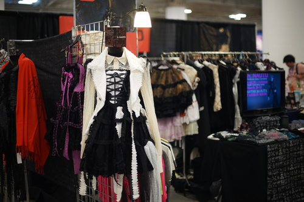 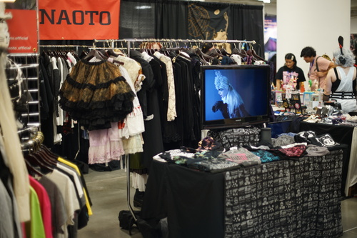 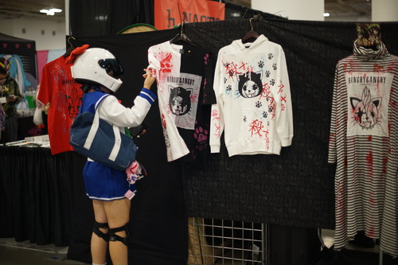His booth sells prize figures on the side.
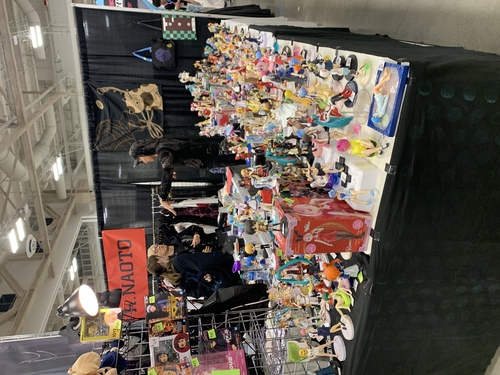I had the pleasure of seeing h.NAOTO more than he probably wanted to see me! I brought Cheby to his booth the second time I showed up there. He recognized "Super Dollfie", but I tried to explain that his head was not Volks. I'm not sure if my words got through the language barrier! I made one of my boldest moves and gave him my business card.
As it turns out, people at booths put up with you a lot better when you spend large amounts of money at their booth. With my JSK, I also got a h.NAOTO VIP badge, lanyard, 2 stickers, and a CD. I was hoping for something as awesome as Hangry and Angry, but it was ambient.
When I learned I was going, I wanted to bring my Hangry and Angry CD for him to sign. I realized I had left the inserts at my mom's house and forgot to grab the disc. Oh well...
Flan and I were a few minutes late to the fashion show due to it being an hour after the doll meet started and on the 5th floor of the other building. Once in a while, the screens on the sides of the stage would flash a VLC player, but neither of us were fast enough to get a shot of it!
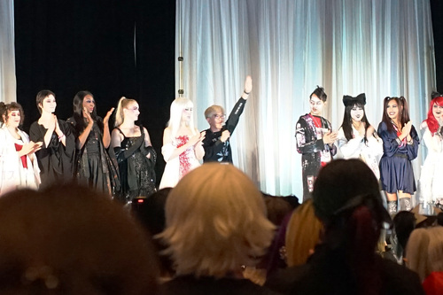Most of the questions at the Q&A were not particularly interesting but there were a couple interesting answers. The "dragon scale" fabric he's been using is made out of washi on wool. It's a very cool looking material, but I worry for its longevity! I will enjoy looking at it on other people. Gackt smells so strongly of Égoïste that h.NAOTO was not able to sell clothes that had had been worn by him. I'm gonna have to locate a bottle to find out what Gackt smells like. Another woman asked him to ID her socks. He told her they were very precious and to take care of them.
With my VIP card and Flan's second purchase of the JSK, we were able to attend the event on Saturday! He tried to give away prizes with trivia questions, but most of us were very bad at answering his questions. The first winners got the coolest prizes. One got a printed wing shawl. so they had to resort to rock paper scissors. I won the first round somehow! My trick: I used scissors 3 times in a row. The best gifts were given out to the earlier winners, but he eventually gave everyone a goodie bag.
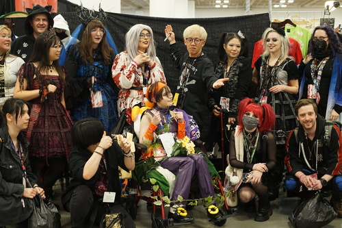 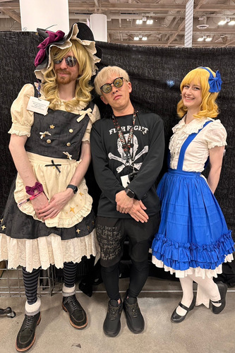After everyone got their gifts, they did a group photo and then individual photos and handshakes.
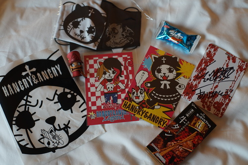Here is my h.naoto haul (not including the JSK). I got an Angry x angel Angry mask which is perfect for the next time the government declares I either wear a mask or lose my job.
I was really shocked every time he recognized me in different outfits! Even outside the elevators at the Grand Hyatt! It meant a lot to me.
Flan and I decided to spend the last 7 minutes of the con at his booth. He started to talk to me about Super Dollfie again! My favorite topic! h.NAOTO owns 4 Super Dollfie. He confirmed he owns Kurumi, and the other 3 are also his collab dolls. He showed me a stock photo of SD13 Cindy wearing h.jelly&Honey dress set and said he owned her. There are 5 total h.NAOTO collab dolls, so he doesn't seem to own them all. He said he would like to do a collab again, so I will try to popularize punk style again so that Volks will propose this to him!!! Everyone go email Volks right now and ask for another h.NAOTO collab! There hasn't been one since 2010!
Who is more of a show stopper than fran hat? Pafnuty Chebyshev! He got almost as much attention as I did when I was half naked in cosplay years ago.
Everyone kept saying he had a kpop haircut. What?!?! I guess I wouldn't know because I don't spend much time looking at kpop boys. I thought he had an incel haircut.
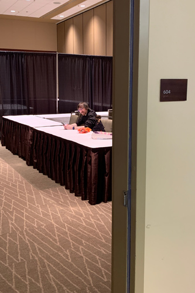On Friday night, I had Cheby out and was walking around with him. Flan and I found an empty room and sat down in it. I put Cheby out on the table with my business cards and a pile of Reese's and sure enough, panel attendees showed up! I had a wonderful chat with a woman who loves F-01, but left the hobby after losing quite a sum of money in a doll scam. She still has 2 of her dolls, so I hope she will pull them out of the closet when she returns home.
After a very long chat, Flan, Makoto, and I walked out of the room and another woman stopped me! She was able to guess he is a Migidoll Miho! (She owns one too)
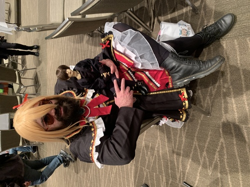I had to ask on DoA, but I got the time and date of the BJD meetup! I got there a bit early and walked up to find a Hound being restrung on a table. One of the attendees had wished for one for a very long time and finally got one in December! I'm very happy for her. The others were helping her restring him but I wasn't quite familiar with their stringing method. One of the attendees (Stardreamer Studios) handed me a sea shell shaped easter egg with a little Cinnamoroll clip inside! I put it on my Veronie when I got home.
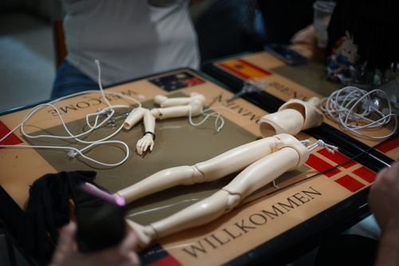I believe I got a photo of every doll attending. Please enjoy!
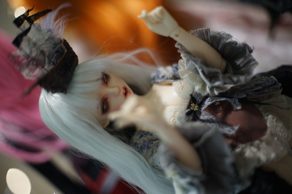 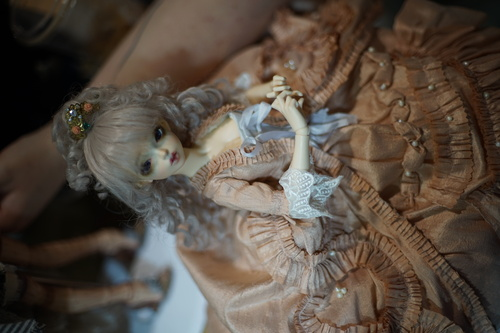 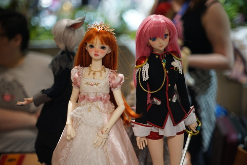 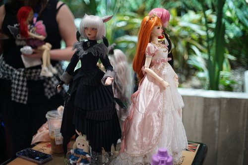 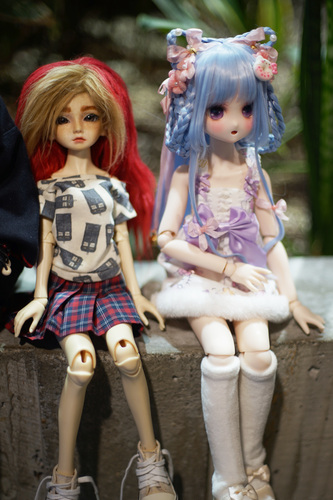My best friend Amanda came too! I got to play with her Rap1993 Danni, Mallow. Mallow is a little terrifying due to her love of fling off her magnetic hands and feet. Feeling very thankful for one touch system right now.
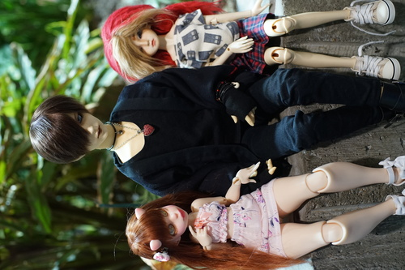 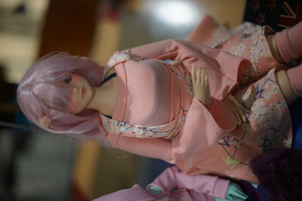 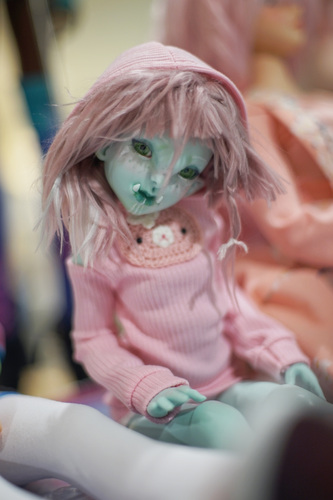 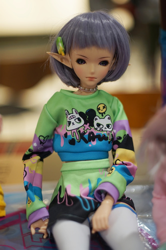 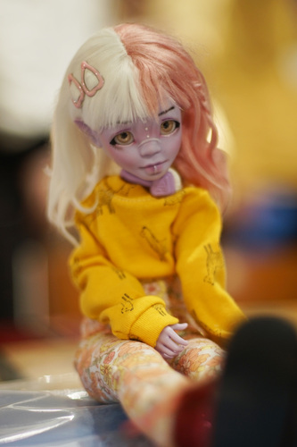 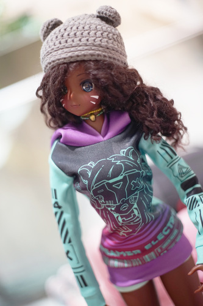 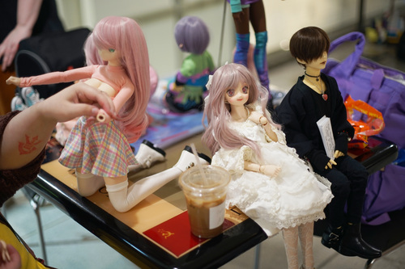 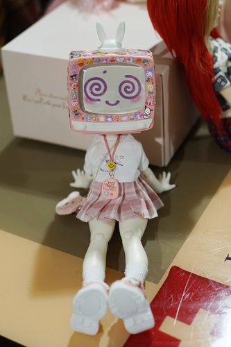
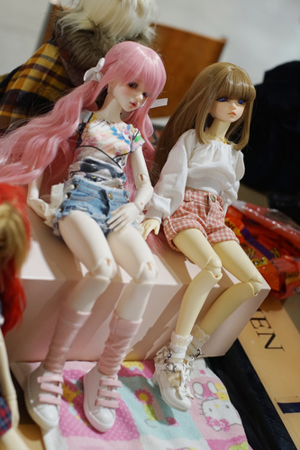
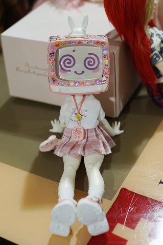
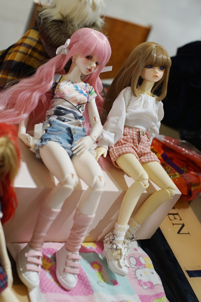
Near the end, a Crobidoll Nia showed up! He was so cute!!!!! Cheby's new cute boy rival?! His little feet were dirty because he was a forest dweller. Cheby was just dirty because I never clean him. I'm finally going to clean him now because he is covered in con filth.
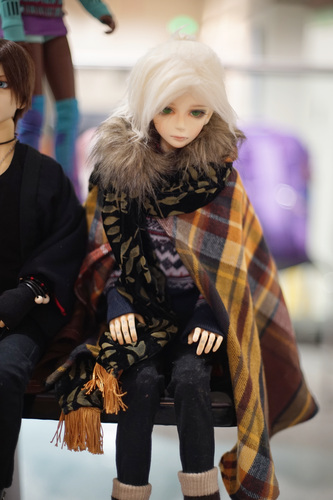 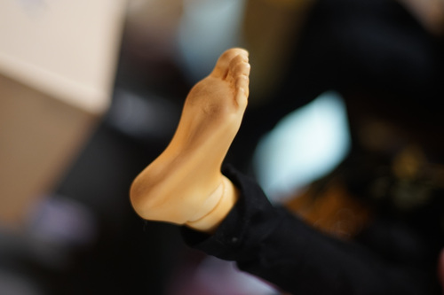I had to ditch out early for the h.NAOTO fashion show. I forgot my bag of Reese's that I was giving out! I didn't mean to litter, so I hope they were eaten.
On Sunday, I found an AP girl trapped in a backpack in the AA. As I was leaving the dealer's hall at the end of the con, I found two girls with dolls in the couch area! One of them attended the meetup and the other didn't.
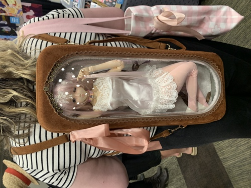 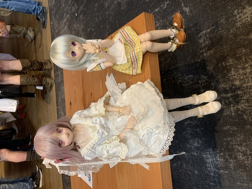For some reason, Copic and Goodsmile were not at this con. I really did want to visit a Copic booth and see if I could buy some replacement nibs...
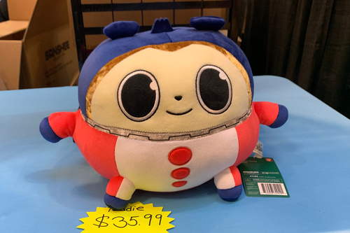You could look out over the Dealer's hall through openings in the floor on ground level. It was a large drop so it was scary!!!
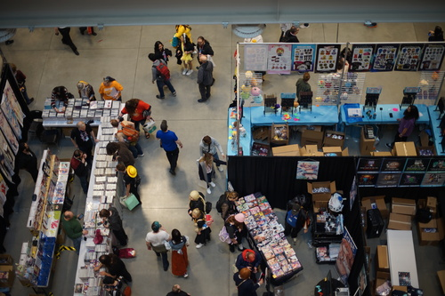 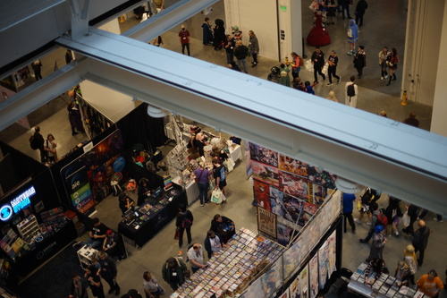 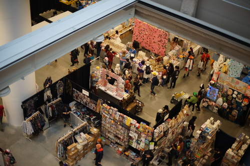There was a vtuber booth where you could speak to her live. Did they lock her in a hotel room and force her to stream all con?! Poor girl!!
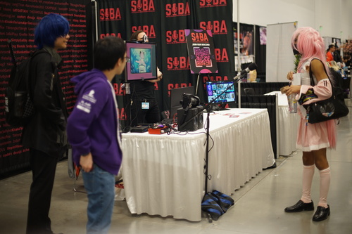I got to experience the "man on a stepstool watching your every movement" at the Retro Saikou booth. They had a couple Haruhi things, but nothing specifically Yuki Nagato. I searched their Mawaru Penguindrum rubber strap collection and found 0 domestic terrorists. Very disappointing. I was tempted by a few Dir en grey CDs and a Cool&Create Splatoon arrange album "Splabeat!"?! I can't believe such a thing exists!
I asked at Hen da ne if they had any Yun Kouga/Kokonoe doujin. He said they had sold out?! Who is buying up all my Yun Kouga work?!
The AA was HUGE this year. It covered the entire old dealer's hall including the area it used to be, plus the lower level where badge pickup used to be. There was a lot of really skilled art there. Somehow a lot of it felt soulless and like AI could have produced a very similar result. Flan said this was probably from many artists using the same style and AI being trained off those artists. I really liked seeing the artists with unique styles! There were a few who had some crazy cool ideas.
AWL420 told me there was a doll seance going on in the back left corner of the AA. Saber was there!! This booth was akemi kiri. He was selling screenprinted shirts with his beautiful art!
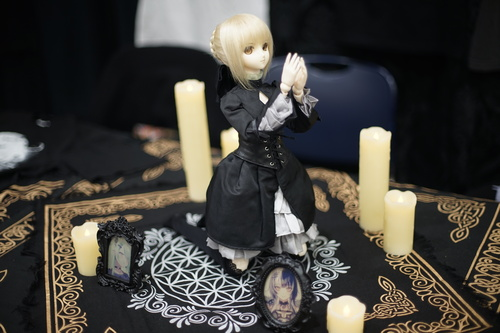There was only one vendor in the AA who sells dolls, and it was rap1993. She was not selling any dolls at her booth, but had one out for display. My bff had told me she was there and I searched the entire 2 floor AA for her booth and had to go back for round 2. She was extremely close to where I started at akemi kiri!
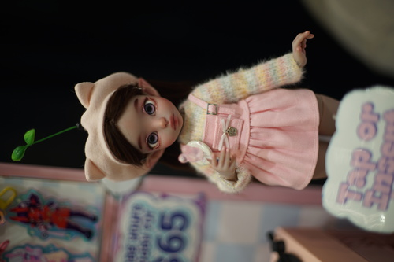 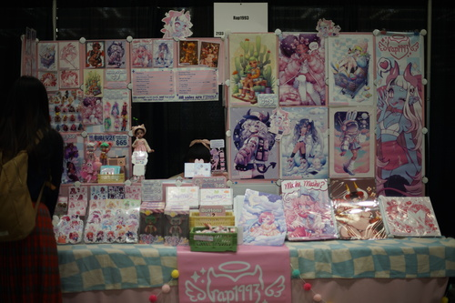I found Studio Paigy selling cotton dolls!! I asked her how often people would buy one doll of a BL pair and not the other and she confirmed that some people do indeed commit the sin of breaking up a couple. SMH!!!
They were so cute! While looking at them, I thought "wow I should get cotton dolls of my dolls!" and then rememembered I already have dolls of my dolls. How did I forget.... I'll still have to make a cotton doll of Liam someday so Hina can hold it.
I found some super duper cute little "Dollypaca" by rinicake!!!! You could even buy outfits for them!!!! Please check out her Etsy and buy one
Flan and I found lots and lots of Genshin Impact art! WOW! You guys really love Genshin Impact, don't you?! There was NOTHING Yuki Nagato anywhere. Not in the dealer's hall. Not in the AA. Absolutely bullshit.
I personally don't like supporting fan art due to it not being the person's IP to sell, so I kept my eye out for original art! It's a gray area and I won't shame you for buying or selling fan art, but it leaves a bad taste in my mouth if the IP owner doesn't give permission. I found one booth at the end of the con with some VERY good boys. I really liked her work! I wasn't in love with any of the formats of the art she was selling, so I didn't buy anything this time. Next time I'll find her earlier than 2 hours before the end of the con. Check out her business card! Absolutely genius! I gotta start reading up on her boys.
I got to see my friend Roko! He has such a beautiful smile. It lights up my day every time! I highly recommend getting a smile from him.
I don't drink anymore, but Flan had me taste the Nacho Cheese Doritos vodka he obtained. It tastes exactly like Nacho Cheese Doritos but also has the awful taste of alcohol. I'm glad I got to taste but I don't understand why such a thing was created. Cool Ranch vodka when?
I am able to confirm SQ is still alive and there is not an AI posing as him. He did not give me a "WT Snacks" sticker even though I asked 5 times and stepped on his toes.
I was so happy to see Evan, Frisk, and Teezy again!!! Evan even gave me $3 for Fran Tax! Thanks, Evan! I finally got to give him the Back to the Future cassette tape I found for him in like 2019.
Both Teezy and Evan said they had been contacted by someone asking for information on the flophouse (aka touhou house) for a documentary! Both of them declined. I can't believe no one thought to DM me?! Anyway, I'll start writing out my 3 volume book series on the flophouse and he can buy the rights to produce a Netflix series for it. Evan and I fought over which one of us gets Leonardo DiCaprio cast as ourself. You will have to wait to find out who won!
Tae dragged us to a Habbo Hotel panel and while we were in line, she told us it was going to be a rough one. The line was huge and the room was filled, with people turned away waiting outside the door! The panel was a few people on stage roleplaying while playing cards against humanity. Within 15 minutes, half the room had walked out. Tae and co dragged us to a mutiny Habbo Hotel panel. It was a singalong?? The songs were like edgy Disney movie songs.
This year, I purchased 0 things for myself?! Flan bought me the JSK. I bought Flan some enamel pins. Most of the junk is freebies I kept taking from the Yen Press booth. Ryan got 2 IMAS Shiny Colors artbooks and a Yui keychain.
I was able to collect 3 extra "verified adult" wristbands. Ryan collected 2 extra. Why did Sakuracon think this was a good idea? People left them on the floor and on tables all the time.
A few items were gifts that weren't from Sakuracon, but were given during Sakuracon. Ryan had paid our friend to bring a Kanade mirror back from Nippon. He brought me back a Grusha acrylic and a Grusha notepad as an omiyage! My bff gave me a "babygirl" toploader for a photo of Cheby and my Christmas present, which was a set of Le Creuset x Hello Kitty teacups and saucers!
Sakuracon was very fun! I'm so happy I got to see my friends after so many years! I hope it will be less than 7 years before I see them all again. We had two casualties: two suitcases. I wasn't able to even pull mine by myself so I'm going to behave better next time and not pack 4 outfits.
Here's Kohi's con report!